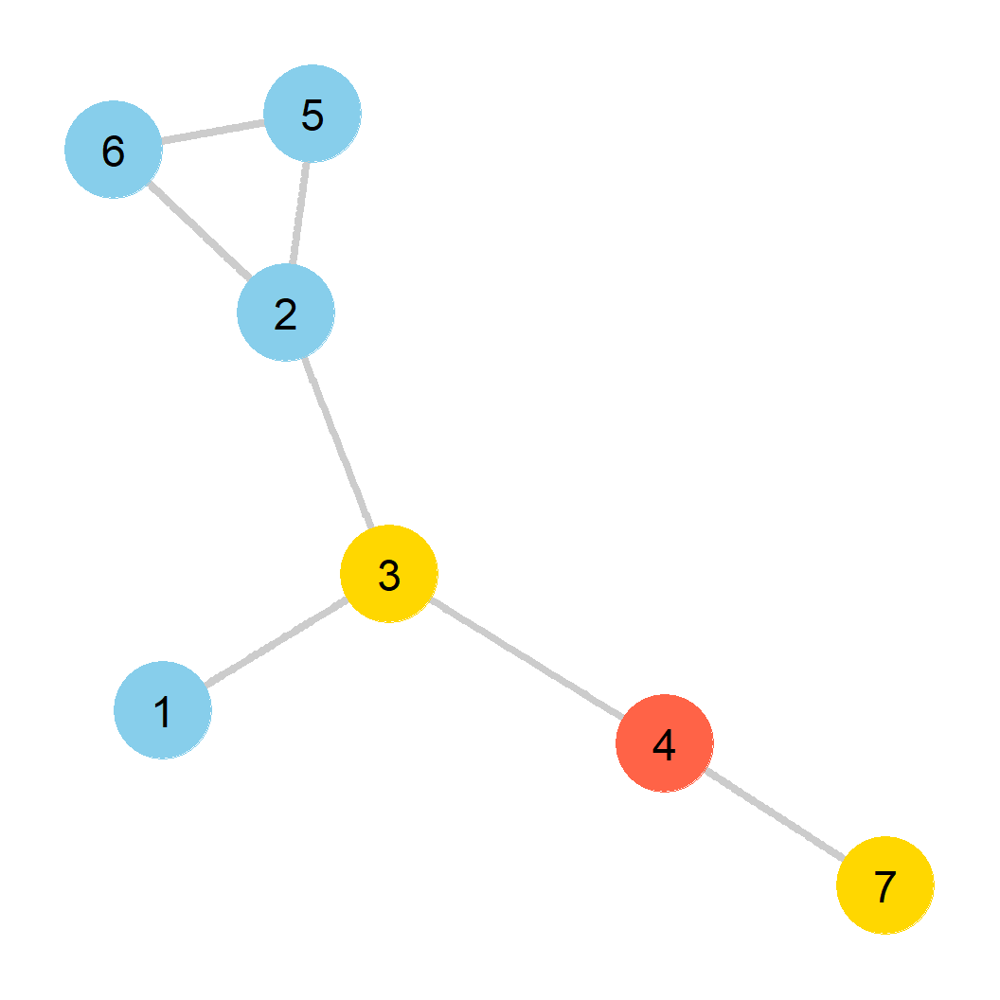
Graph Theory: Neighborhoods & Degree
The Basics of Social Network Analysis
Node Neighborhoods
Node Neighborhoods
- Neighborhood (\(\mathcal{N}(v)\)):
- The set of nodes that are directly connected (adjacent) to node \(v\).
- These are a node’s immediate neighbors.
- Isolates have an empty neighborhood set (\(\emptyset\)).
Node Neighborhoods: Example
- Let’s look at the graph on the right:
- Focal Node: 4 (in tomato)
- Neighborhood: \(\mathcal{N}(4) = \{3, 7\}\) (in gold)
- Another example:
- \(\mathcal{N}(1) = \{3\}\)
Neighborhood Intersection
- Neighborhood Intersection (\(\mathcal{N}(u) \cap \mathcal{N}(v)\)) is the set of common neighbors connected to both \(u\) and \(v\).
- In our graph:
- \(N(1) = \{3\}\)
- \(N(4) = \{3, 7\}\)
- The intersection is the single node they share:
- \(N(1) \cap N(4) = \{3\}\)
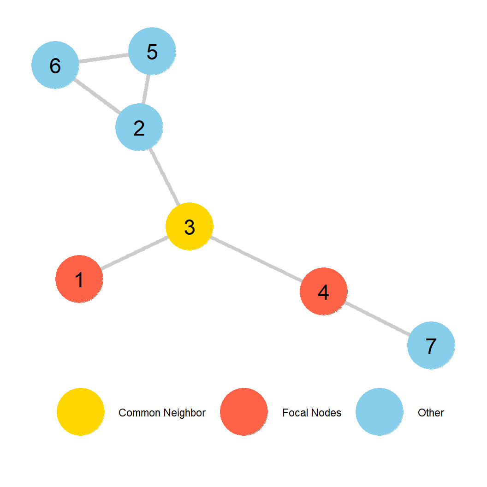
Neighborhood Intersection: Example 2
- Let’s find the neighborhood intersection of nodes 5 and 3.
- First, list their individual neighborhood sets:
- \(\mathcal{N}(5) = \{2, 6\}\)
- \(\mathcal{N}(3) = \{1, 2, 4\}\)
- The intersection is the set of common neighbors they share:
- \(\mathcal{N}(5) \cap \mathcal{N}(3) = \{2\}\)
Neighborhood Intersection: Example 2 (Graph)
- Nodes 5 and 3 (in tomato) are not directly connected.
- However, they share a common neighbor: node 2 (in gold).
- Therefore, their neighborhood intersection is: \[\mathcal{N}(5) \cap \mathcal{N}(3) = \{2\}\]
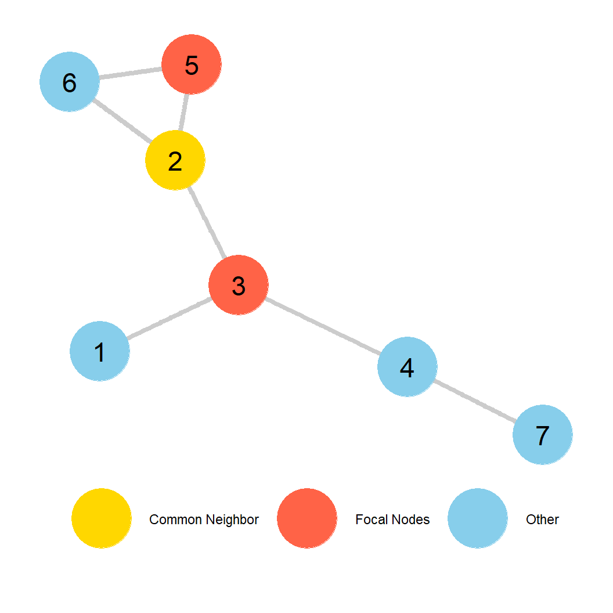
Neighborhood Union
- Neighborhood Union (\(\mathcal{N}(u) \cup \mathcal{N}(v)\)) is the set of all nodes connected to either \(u\) or \(v\).
- In our graph:
- \(N(1) = \{3\}\)
- \(N(4) = \{3, 7\}\)
- The union contains all unique neighbors from both sets:
- \(N(1) \cup N(4) = \{3, 7\}\)
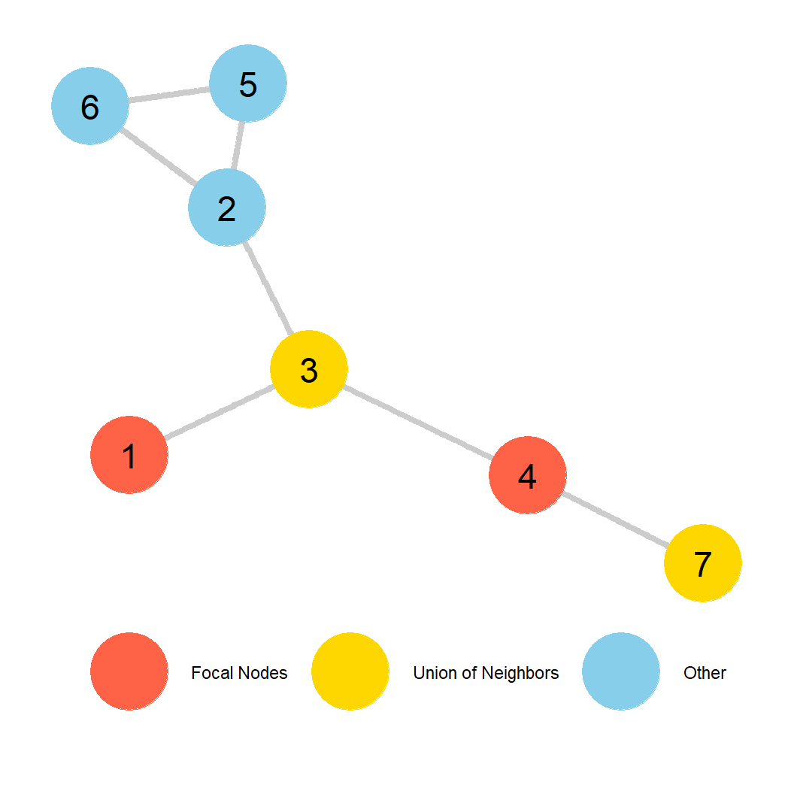
Neighborhood Union: Example 2
- Let’s find the neighborhood union of nodes 5 and 3.
- First, list their individual neighborhood sets:
- \(\mathcal{N}(5) = \{2, 6\}\)
- \(\mathcal{N}(3) = \{1, 2, 4\}\)
- The union combines all unique neighbors from both sets:
- \(\mathcal{N}(5) \cup \mathcal{N}(3) = \{1, 2, 4, 6\}\)
Neighborhood Union: Example 2 (Graph)
- Focal nodes 5 and 3 are shown in tomato.
- The union of their neighbors (nodes 1, 2, 4, 6) is shown in gold.
- Therefore, the union of neighbors is: \[\mathcal{N}(5) \cup \mathcal{N}(3) = \{1, 2, 4, 6\}\]
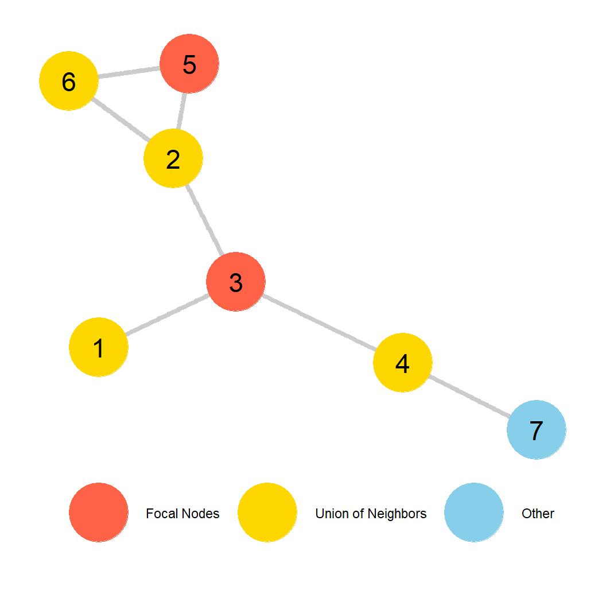
Directed Graph Elements & Metrics
Asymmetric Ties & Directed Graphs
- Some relationships have an inherent directionality (asymmetric ties):
- e.g., “A helps B”, “A seeks advice from B”.
- Unlike symmetric ties, mutuality or reciprocity is not guaranteed by definition.
- Reciprocity is an empirical event in the world (mutuality must be measured rather than assumed).
Directed Graph Representation
- Asymmetric networks are represented as a directed graph (or digraph):
- Simple lines are replaced with arrows indicating directionality.
- Every edge has a source node (sender) and a destination node (receiver).
- Unlike undirected graphs, node order matters: edge \(AB\) is distinct from \(BA\).
Directed Graph: An Example
- Let’s look at the digraph on the right:
- Arrows indicate the direction of the relationship.
- Some ties are reciprocated (e.g., \(A \leftrightarrow B\) and \(B \leftrightarrow D\)).
- Others are strictly asymmetric (e.g., \(E \rightarrow C\), \(G \rightarrow F\)).
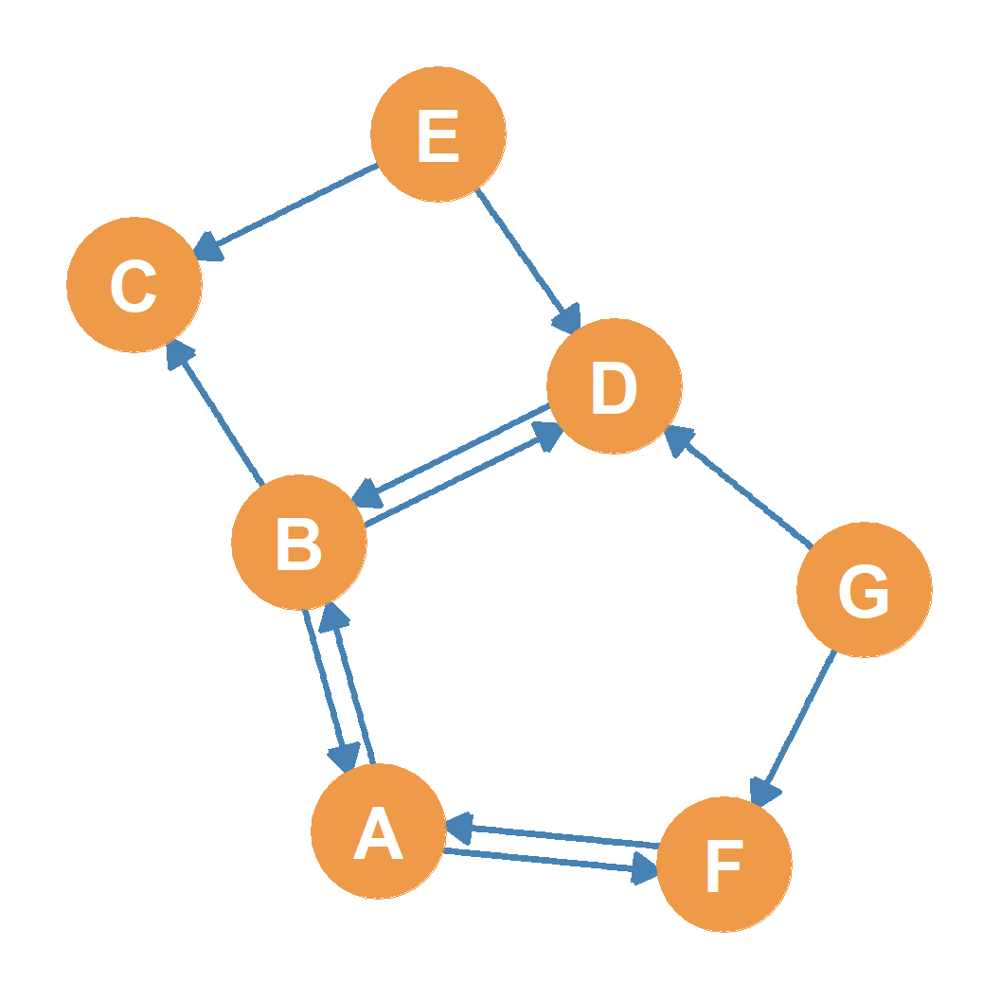
Neighborhoods in Directed Graphs (1)
- Because links are directional, nodes have two neighborhoods.
- In-Neighborhood (\(N^{in}(v)\)):
- Set of source nodes pointing to \(v\).
- Example: \(N^{in}(D) = \{B, E, G\}\) (highlighted in gold, pointing to focal node D in tomato).
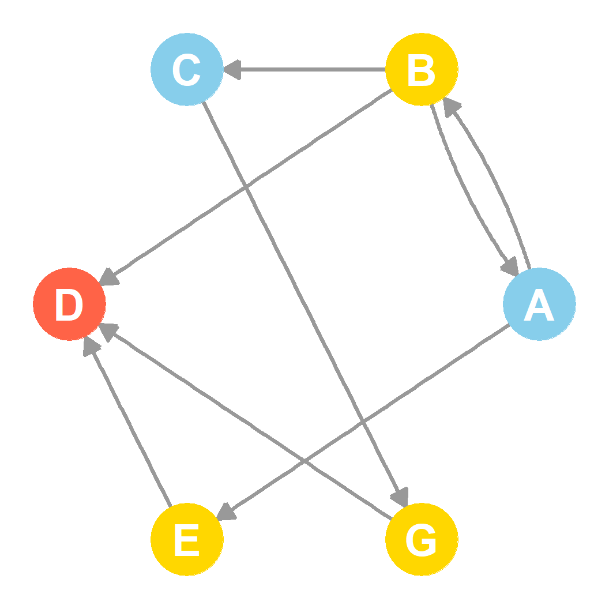
Neighborhoods in Directed Graphs (2)
- Out-Neighborhood (\(N^{out}(v)\)):
- Set of destination nodes that \(v\) points to.
- Example: \(N^{out}(B) = \{A, C, D\}\) (highlighted in gold, pointing from focal node B in tomato).
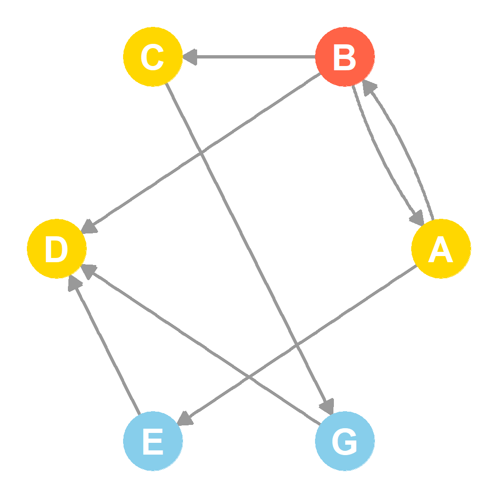
Directed Neighborhoods: Reciprocity
- A node appears in both neighborhoods only if there is a reciprocal (mutual) tie.
- Example for Node B (in tomato):
- In-Neighborhood: \(N^{in}(B) = \{A\}\)
- Out-Neighborhood: \(N^{out}(B) = \{A, C, D\}\)
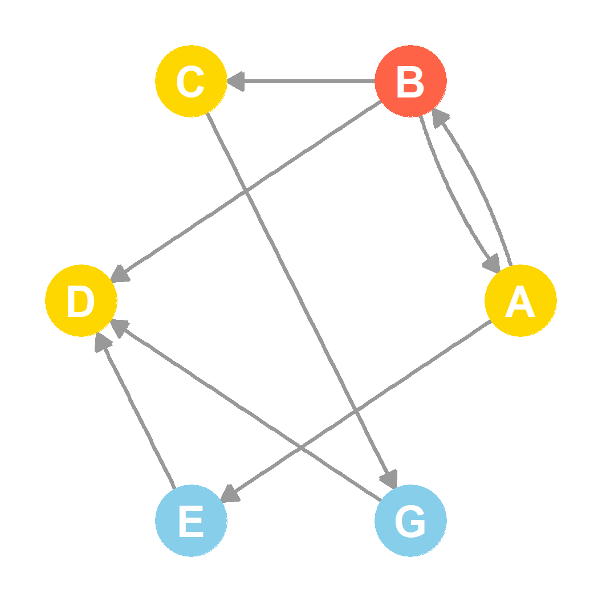
Directed Neighborhoods: Reciprocity Overlap
- Since there is a reciprocal tie \(A \leftrightarrow B\), node A (in gold) belongs to both sets.
- Therefore, the overlap is the intersection of these two neighborhoods: \[N^{in}(B) \cap N^{out}(B) = \{A\}\]

Directed Neighborhood Intersection
- In directed graphs, neighborhood intersections can be defined for incoming or outgoing ties:
- In-Neighborhood Intersection: Common source nodes pointing to both \(u\) and \(v\):
- \(N^{in}(D) \cap N^{in}(A) = \{B\}\) (Node \(B\) points to both \(D\) and \(A\))
- Out-Neighborhood Intersection: Common destination nodes that both \(u\) and \(v\) point to:
- \(N^{out}(B) \cap N^{out}(E) = \{D\}\) (Both \(B\) and \(E\) point to \(D\))
Directed Neighborhood Intersection: Example
- Let’s visualize the out-neighborhood intersection of nodes B and E (in tomato):
- \(N^{out}(B) = \{A, C, D\}\)
- \(N^{out}(E) = \{D\}\)
- They share one common destination node:
- \(N^{out}(B) \cap N^{out}(E) = \{D\}\) (in gold)
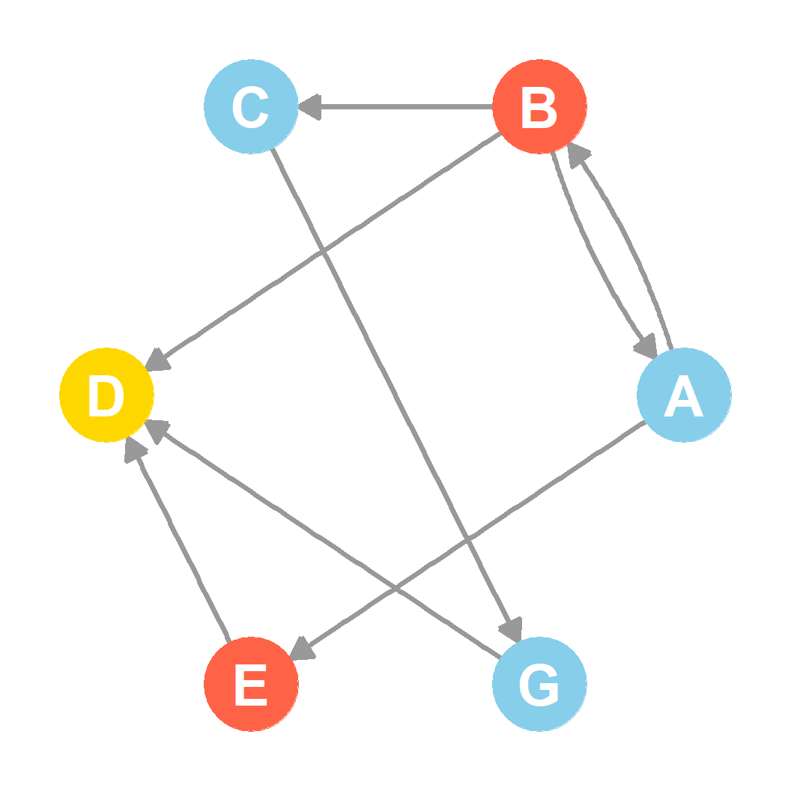
Directed Neighborhood Union
- Similarly, directed neighborhood unions combine the sets of neighbors:
- In-Neighborhood Union: Nodes pointing to either \(u\) or \(v\):
- \(N^{in}(D) \cup N^{in}(A) = \{B, E, G\}\)
- Out-Neighborhood Union: Nodes that either \(u\) or \(v\) points to:
- \(N^{out}(B) \cup N^{out}(E) = \{A, C, D\}\)
Directed Neighborhood Union: Example
- Let’s visualize the out-neighborhood union of nodes B and E (in tomato):
- \(N^{out}(B) = \{A, C, D\}\)
- \(N^{out}(E) = \{D\}\)
- Combining all unique destination nodes gives:
- \(N^{out}(B) \cup N^{out}(E) = \{A, C, D\}\) (in gold)
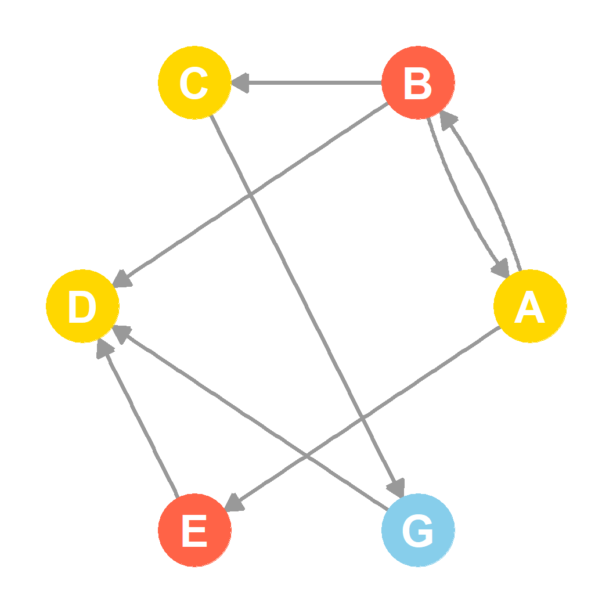
Node Degree
Node Degree in Undirected Graphs
- In an undirected graph, a node’s degree (\(k_i\)) has two equivalent definitions:
- Neighborhood Cardinality: The number of neighbors of node \(i\) (\(k_i = |\mathcal{N}(i)|\)).
- Incident Edges Count: The number of edges connected to node \(i\).
- Sociological meaning: Degree Centrality (reflects popularity, influence, or activity).
Node Degree: An Example
- Let’s calculate the degree for Node A (in tomato) on the right:
- Neighbors of A: \(\mathcal{N}(A) = \{B, C, D, F\}\)
- Neighborhood size: \(k_A = |\mathcal{N}(A)| = 4\)
- Incident edges: \(AB\), \(AC\), \(AD\), and \(AF\) (\(k_A = 4\))
- Thus, the degree of Node A is 4.
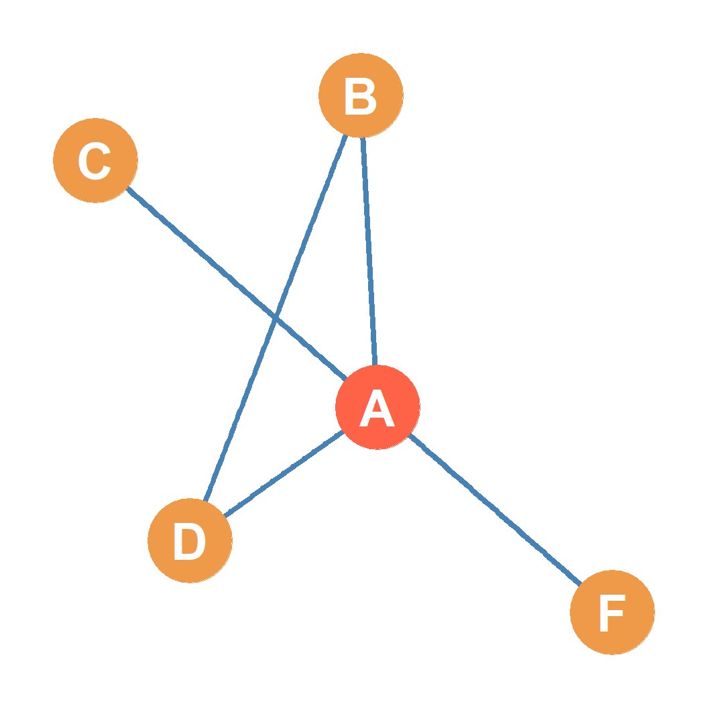
Endpoints in Undirected Graphs
- Endpoints (or leaves/periphery):
- Nodes that have a degree equal to one (\(k_i = 1\)).
- They have just a single neighbor in the graph.
Endpoints: An Example
- Let’s identify the endpoints in the graph on the right:
- Nodes C and F (in tomato) are connected only to node A.
- Since \(k_C = 1\) and \(k_F = 1\), they have degree one.
- Therefore, C and F are the endpoints of this graph.

Node Degree in Directed Graphs: Indegree
- Directed graphs have two distinct degrees for each node.
- Indegree (\(k^{in}_i\)):
- Number of edges pointing to node \(i\) (cardinality of \(N^{in}(i)\)).
- Sociological meaning: Popularity, Prestige, or Status.
Indegree: An Example
- Let’s find the indegree for Node D (in tomato) on the right:
- Source nodes pointing to D: \(N^{in}(D) = \{B, E, G\}\) (in gold)
- Indegree: \(k^{in}_D = |N^{in}(D)| = 3\)
- Node D has 3 incoming arrows, representing a node with relatively high popularity or status.
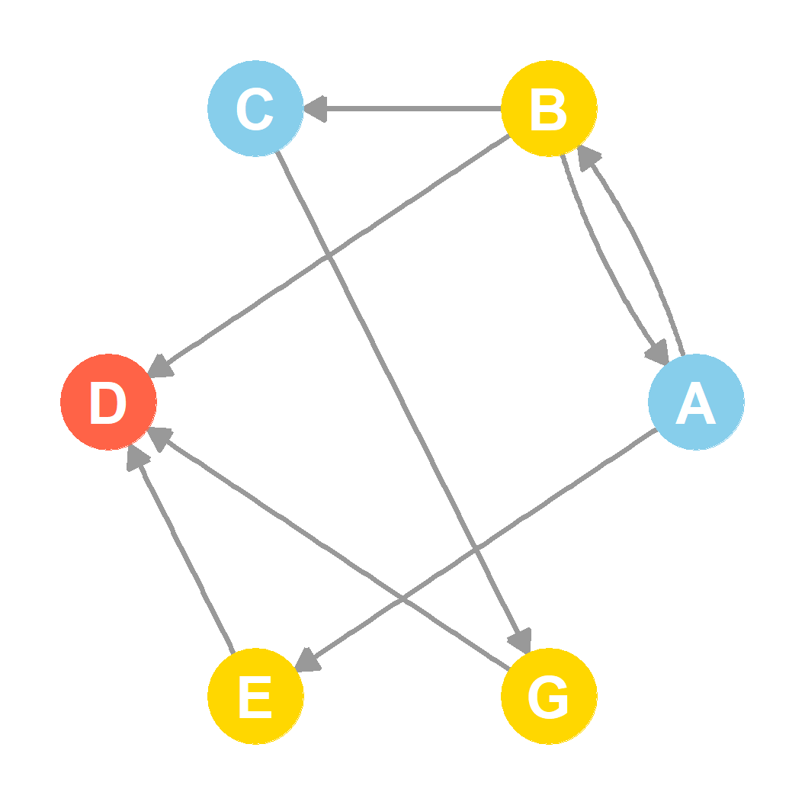
Node Degree in Directed Graphs: Outdegree
- Outdegree (\(k^{out}_i\)):
- Number of edges pointing from node \(i\) (cardinality of \(N^{out}(i)\)).
- Sociological meaning: Sociability or Activity.
Outdegree: An Example
- Let’s find the outdegree for Node B (in tomato) on the right:
- Target nodes that B points to: \(N^{out}(B) = \{A, C, D\}\) (in gold)
- Outdegree: \(k^{out}_B = |N^{out}(B)| = 3\)
- Node B has 3 outgoing arrows, representing a node with relatively high sociability or activity.

Types of Nodes in Directed Graphs
- In a directed graph, we can distinguish three types of (non-isolate) nodes based on incoming and outgoing ties:
- Receivers: Nodes that receive ties but do not send them (\(k_{in} > 0\) and \(k_{out} = 0\)).
- Transmitters: Nodes that send ties but do not receive them (\(k_{in} = 0\) and \(k_{out} > 0\)).
- Carriers: Nodes that both receive and send ties (\(k_{in} > 0\) and \(k_{out} > 0\)).
Node Types: An Example
- Looking at the directed graph on the right:
- Receiver: Node C (only receives ties).
- Transmitters: Nodes E and G (only send ties).
- Carriers: Nodes A, B, D, F (both receive and send ties).
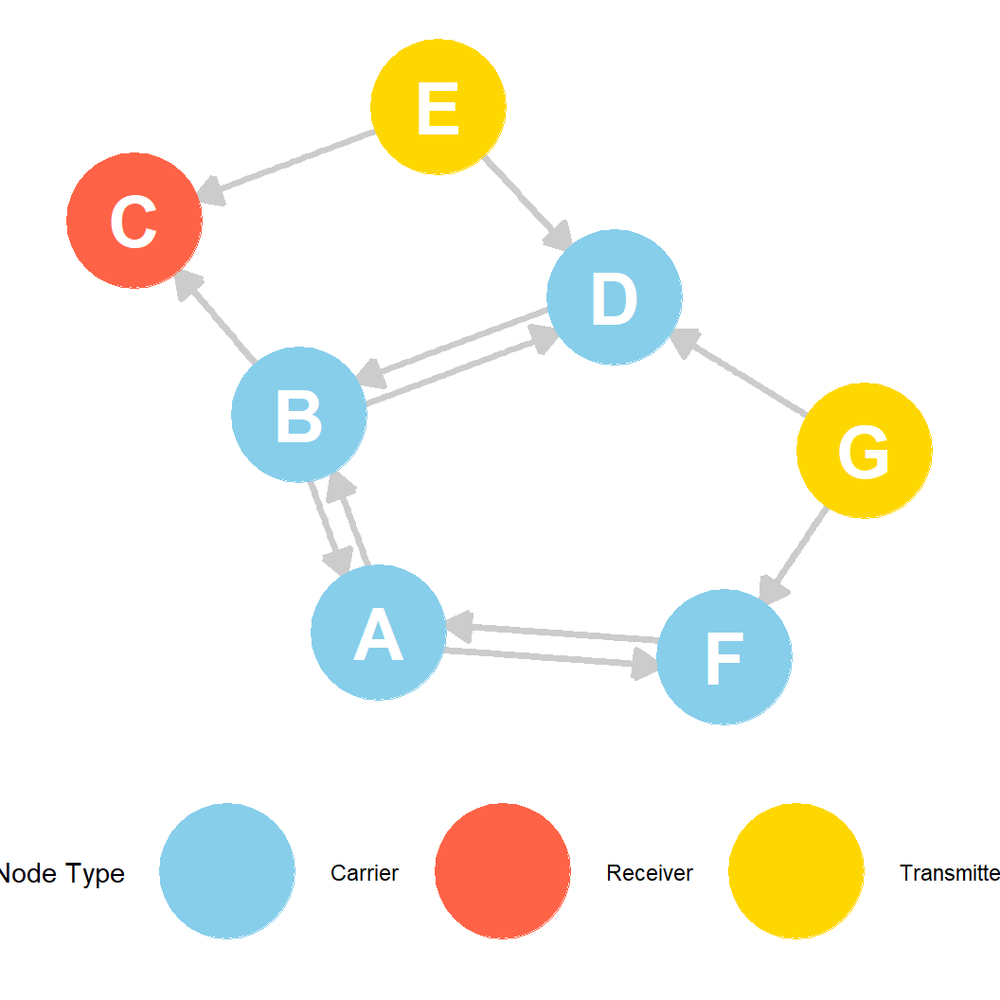
Basic Graph Metrics
Graph Order and Size
- Graph Order (\(n\)):
- The number of nodes in the graph (\(n = |V|\)).
- Cardinality of the vertex set.
- Graph Size (\(m\)):
- The number of edges in the graph (\(m = |E|\)).
- Cardinality of the edge set.
Order and Size: Undirected Example
- Let’s look at the undirected graph on the right:
- Node Set (\(V\)): \(\{1, 2, 3, 4, 5, 6, 7\}\)
- Edge Set (\(E\)): \(\{13, 43, 47, 25, 56, 62, 32\}\)
- Graph Order (\(n = |V|\)): 7 nodes
- Graph Size (\(m = |E|\)): 7 edges
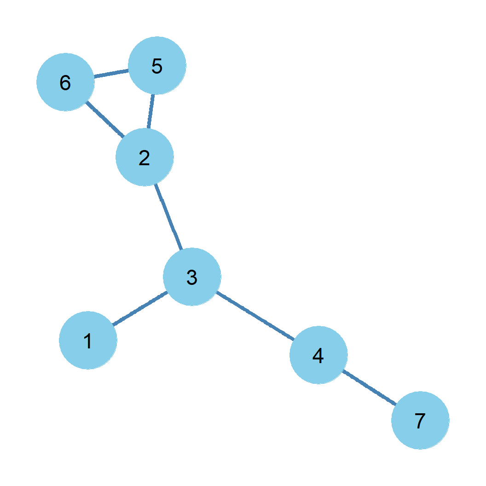
Order and Size: Directed Example
- Let’s look at the directed graph on the right:
- Node Set (\(V\)): \(\{A, B, C, D, E, G\}\)
- Edge Set (\(E\)): 8 directed arcs: \(B \rightarrow A, B \rightarrow C, B \rightarrow D, E \rightarrow D, G \rightarrow D, A \rightarrow E, C \rightarrow G, A \rightarrow B\)
- Graph Order (\(n = |V|\)): 6 nodes
- Graph Size (\(m = |E|\)): 8 edges

Graph Maximum Size
- The maximum size of a simple graph of order \(n\) is the number of edges in a complete graph (where every node is connected to every other node).
- Undirected: \(Max(E) = \frac{n(n - 1)}{2}\)
- Directed: \(Max(E) = n(n - 1)\)
Graph Density
- Density (\(d\)) is the ratio of the observed number of edges (\(m\)) to the maximum possible number of edges.
- It’s a value between 0 (empty) and 1 (complete).
- Undirected: \(d = \frac{2m}{n(n-1)}\)
- Directed: \(d = \frac{m}{n(n-1)}\)
- It can be interpreted as the probability that any two randomly chosen nodes are connected.
- Denser networks are less vulnerable to breakdowns when key nodes are removed.
Degree-Based Graph Metrics
Graph Degree Set and Sequence
- Graph Degree Set: A list of the degrees of every node in the graph.
- Graph Degree Sequence: The degree set sorted in descending order.
- This provides a “fingerprint” of the graph’s overall connectivity structure.
Degree Range & Sum
- Maximum Degree (\(k_{max}\)) and Minimum Degree (\(k_{min}\)).
- Degree Range (\(k_r\)): \(k_{max} - k_{min}\).
- Sum of Degrees (\(\sum k_i\)):
- In an undirected graph, this is always twice the number of edges: \(\sum k_i = 2m\).
Graphical Degree Sequences
- A graphical degree sequence is a sequence of numbers that can be the degree sequence of a simple graph.
- Not every sequence of integers is graphical.
- Havel-Hakimi Theorem provides a recursive algorithm to check if a sequence is graphical.
Average Degree
Average Degree (\(\bar{k}\)): The average of all node degrees in the graph.
\[\bar{k} = \frac{1}{n} \sum_{i=1}^{n} k_i = \frac{2m}{n}\]
It represents the expected degree of a randomly chosen node.
It is also directly related to density: \(\bar{k} = d(n-1)\).
Degree Variance
Degree Variance (\(\sigma^2_k\)): A measure of how much the node degrees vary from the average degree.
\[\sigma^2_k = \frac{1}{n} \sum_{i=1}^{n} (k_i - \bar{k})^2\]
A low variance indicates a more homogeneous or uniform network (like a regular graph).
A high variance indicates a heterogeneous network with both low-degree nodes and high-degree “hubs” (like a scale-free network).
Regular Graphs
- A regular graph is a graph where every node has the same degree.
- If every node has degree \(k\), it is called a \(k\)-regular graph.
- This means the degree variance is zero: \[\sigma^2_k = 0\]
- These are often used as baseline models but are rare in real-world social networks.
- Example: A 3-regular graph on 6 nodes (shown on the right).

Feld’s Friendship Paradox
- Average Nearest Neighbor Degree (\(\bar{k}_{nn(i)}\)):
- The average degree of node \(i\)’s neighbors: \[\bar{k}_{nn(i)} = \frac{1}{k_i} \sum_{j \in \mathcal{N}(i)} k_j\]
- The Friendship Paradox (Scott Feld, 1991):
- In almost all social networks, the average degree of a person’s friends (\(\bar{k}_{nn}\)) is greater than the average degree of the people in the network (\(\bar{k}\)).
- Your friends have more friends than you do!
Directed Graph Elements & Metrics
Directed Degree Sets & Sequences
- Directed graphs have two distinct degree sets (In-Degree set and Out-Degree set) and two distinct sequences.
- Sum of Degrees:
The sum of in-degrees is always equal to the sum of out-degrees, which is equal to the size \(m\) (number of edges):
\[\sum k^{in}_i = \sum k^{out}_i = m\]
Since both sum to \(m\), directed graphs have only one average degree: \(\bar{k} = m/n\).